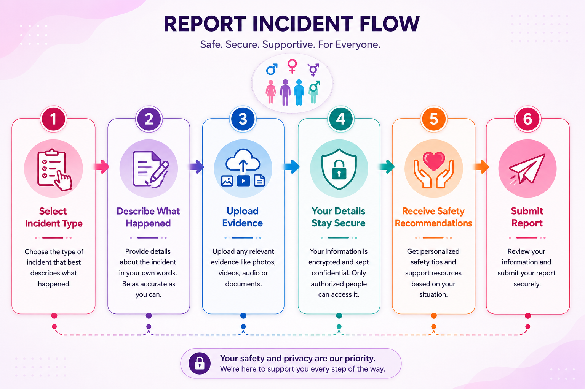

How it works
Choose your incident type, describe what happened, upload evidence, and receive safety recommendations. Get status updates from your report dashboard and keep your details secure.

EqualVoice is a focused incident documentation platform built for confidentiality, trust, and real-world support. Start a guided report, preserve evidence, and access trusted help resources.

Choose your incident type, describe what happened, upload evidence, and receive safety recommendations. Get status updates from your report dashboard and keep your details secure.

Your report can be anonymous. Local browser storage keeps your record only accessible to you, while future backend integration prepares secure encrypted storage.

Save trusted contacts and use the emergency alert system if you need a fast way to tell someone you are at risk. The platform explains when geolocation is unavailable.
Receive personalized recommendations for next steps based on the type of incident you report. The system supports work, school, violence, harassment, and LGBTQ-specific concerns.
This prototype stores reports locally for privacy and data protection. When connected to a backend, the system will support authenticated accounts, encrypted evidence storage, and trusted alerts.
Brave individuals and advocates who are making a difference. Their stories inspire action and change.

Community Advocate & Founder
Mary Anne started EqualVoice after witnessing countless individuals struggle to report harassment safely. With over 8 years of experience in victim advocacy, Mary Anne is committed to creating platforms that prioritize confidentiality and user empowerment.
Workplace Rights Advocate
Kate works with organizations to establish better reporting mechanisms and create cultures of accountability.

School Safety Coordinator
James has dedicated his career to ensuring safe school environments and helping young people navigate reporting systems.
LGBTQ+ Community Leader
Priya creates safe spaces for LGBTQ+ individuals to report discrimination and access affirming support resources.
Hear directly from our community members about how EqualVoice has helped them find their voice.
"I never thought I'd have the courage to report what happened to me. EqualVoice made it feel possible and safe. I'm so grateful."
"The anonymous reporting feature gave me the confidence to come forward. Knowing my safety was prioritized made all the difference."
"As an HR professional, I recommend EqualVoice to all our partner organizations. It's exactly what workplaces need."